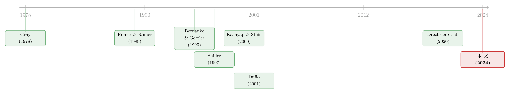

通胀的另一张账单：当它先砸了银行，再砸了房子
本文读的是 Agarwal & Baron (2024, Journal of Financial Economics)：一次没被预料到的通胀上升，会通过银行这个被宏观文献长期忽略的渠道，变成实打实的紧缩——更「暴露」于通胀的银行收缩放贷，进而压低当地房价和建筑业就业。作者用 1977 年初美国那次「5% 跳到 7%」的通胀，加上各州储备金要求的差异，把这条因果链一节一节焊死。
1 一个老问题，和一个被绕开的答案
宏观经济学里有一个几乎和这门学科一样古老的问题：意外的通胀上升，到底会不会在短期里制造真实的经济波动？如果会，又是通过什么渠道？
教科书给过两套互相打架的答案。一套是「货币中性 (neutrality of money)」：通胀只是换了计量单位，名义上的数字都乘以一个系数，实际产出该多少还是多少。Shiller (1997) 甚至论证，公众之所以讨厌通胀，很大程度上是抱着一个错误信念——以为工资增长会落后于物价。另一套则相反：新凯恩斯模型说小幅意外通胀能放松名义工资刚性、反而抬高产出；带金融摩擦的模型说通胀能稀释债务人的实际负担、同样抬高产出（Bernanke et al., 1999）。
你发现问题了吗？这些理论不仅吵架，连方向都是反的。更尴尬的是，它们都很难解释「滞胀 (stagflation)」——高通胀和经济停滞同时发生。一边说通胀刺激产出，一边现实里通胀和衰退手拉手出现，这账对不上。
但真正让 Agarwal 和 Baron 觉得不对劲的，是另一件事：几乎所有这些理论，都把金融部门当成了透明的。 劳动力市场的名义刚性谈了又谈，非金融企业的合同非指数化也谈了又谈，可银行——这个把储蓄变成贷款、把短期负债变成长期资产的机器——几乎被整个抹掉了。
于是本文的主张就一句话：通胀之所以可能是紧缩的，恰恰因为它先砸坏了银行。
2 先看两张「描述性」的草图
要让人相信「通胀通过银行收紧信贷」，作者没有一上来就抛因果，而是先画了两张草图。
第一张：在一个从 1870 年到 2016 年、横跨多国的非平衡面板里，他们发现——通胀大幅上升，往往跟随着未来短期内银行信贷/GDP 的下降。
第二张：把镜头拉近到一个个历史与国际通胀事件里（从 1920 年代的法国、德国，到近几十年的新兴市场），凡是有银行层面数据的，信贷收缩主要由那些最暴露于通胀的银行驱动。这里的「暴露」，用的是一个基于资产负债表的指标——后面会细讲。
接着，一个自然的问题是：这两张草图能当因果证据吗？
不能，而且作者自己第一个承认。因为它们至少踩了两个坑。第一个坑：通胀本身也许没害处，它只是底层麻烦（财政失衡、供给冲击、货币贬值）的症状。你看到通胀和衰退一起来，可能两者都是第三个东西的结果。第二个坑（即便用横截面比较绕开了第一个坑）：那些「高通胀暴露」的银行，会不会本来就在别的方面系统性地不一样，而那些不一样恰好也预测了它们后来少放贷？
要回答「通胀导致了什么」，光有相关性不够。你需要一个实验。
3 识别策略：在一州之内，找一台「天然的随机分配器」
本文最漂亮的一步，是找到了一台 1970 年代美国监管制度里现成的「随机分配器」：州级储备金要求 (state-level reserve requirements)。
先交代制度背景。美联储 (Fed) 的成员银行 (member banks)，无论是国民银行还是州立特许，都适用全国统一的准备金率——跨州没有任何差异。而非成员银行 (nonmember banks) 全是州立特许的，它们的准备金率由各州自己定，州与州之间差很多。
为什么这件事和通胀暴露有关？因为准备金要求本质上是规定了一个最低的「现金/活期存款」比例——银行必须把一部分钱压成不生息的现金。而当通胀意外上升时，这堆非生息现金的实际价值会被侵蚀。所以一条很干净的逻辑链就出来了：
州准备金率越高 → 银行被迫持有越多非生息现金 → 通胀上升时实际价值损失越大 → 银行的「通胀暴露」越高。
这正是工具变量 (instrumental variables, IV) 想要的东西：一个只通过「通胀暴露」影响后续放贷、而本身又外生于银行经营选择的变量。
作者采用了 Duflo (2001) 那个带差异化处理效应 (differential treatment effect) 的 IV 框架：
- 处理组：非成员银行。它们按各自所在州的准备金率，受到强度不同的「处理」——州准备金率越高，处理越强，通胀暴露越高。
- 控制组（未处理）：成员银行。它们的准备金率全国统一，跨州没有任何变化，因此构成一个「不随州变化」的对照。
为什么要同时有这两组？因为如果只比较不同州的非成员银行，你仍然会担心：是不是这些州本身的宏观环境就不一样（比如得州在 1970 年代石油繁荣）？于是作者在同一州之内，把「非成员 vs. 成员」的差也差出来——相当于对州层面的一切共同冲击做了一次差分。识别由此落在：同一个州里，非成员银行相对成员银行、且这个相对差又随该州准备金率高低而放大的那部分变化上。
这套设计的精髓在于「双重差分味」的 IV：跨州差异提供工具变量的强度，州内「非成员减成员」的对照则洗掉了州层面的混淆因素。它和银行信贷渠道文献里那套「用同一借款人在不同银行的贷款做差分」的思路一脉相承（关于跨国对比下银行渠道的异质性，可参见《同样的加息，为什么德国的银行和西班牙的银行走向相反？》）。
4 为什么偏偏是 1977？
这里值得停一下。美国 1970 年代有好几次通胀，1973–1974 和 1978–1981 那两次都比 1977 年初猛得多。作者为什么偏偏挑这次「只从 5% 跳到 7%」的小通胀？
因为 1977 年初这次，几乎是为因果识别量身定做的：
- 一次性跳变：通胀从 5% 一步跳到 7%，然后在随后一年里大体平稳——这是一个干净的「断点」，而不是缓慢爬升。
- 被一比一计入名义利率，但实际利率几乎没动：市场立刻把这次通胀计入了更高的名义短期利率，事后实际短期利率变化极小。
- 成因单一：这波通胀普遍归因于一个原因——年初异常寒冷的冬天推高了能源价格，再迅速传导到广义物价。没有货币政策转向，没有大的汇率变动，没有长端利率剧烈移动。Romer & Romer (1989) 翻 FOMC 记录证实：尽管通胀在升，美联储 1977 年并没有考虑紧缩，仍处在扩张姿态。
- 数据上的天时：Call Reports 银行数据 1976 年才开始有电子版（更早的通胀没法做）；而 1980 年的《货币控制法》废除了州级准备金要求（此后这套识别就失效了）；州准备金率又恰好只在 1976 年被 Gilbert & Lovati (1978) 完整汇报过一次。
换句话说，这扇识别的窗口，只在 1976–1980 年开着，而 1977 年初那次通胀正好卡在窗口正中央。 这是运气，但更是作者把制度史读透之后捡起来的运气。
5 主要结果：从银行的资产负债表，一路砸到工地
有了工具变量，剩下的就是两段式回归。
第一阶段确认工具有效：1976 年 12 月（通胀上升之前），州准备金率更高的非成员银行，其资产负债表测得的通胀暴露确实更高；而对成员银行（未处理组），准备金率对通胀暴露没有任何作用——这正是「安慰剂」该有的样子。
第二阶段给出核心结论：通胀暴露最高（由高州准备金率所工具化）的银行，在通胀上升后放贷收缩得最多。加总到全国，这意味着 1977 年美国贷款增长被压低了 3.2 个百分点——而当年的平均贷款增速是 19%。也就是说，光这一条银行渠道，就吃掉了当年信贷扩张的约六分之一。
作者还在一个覆盖 1976–2019 年全部美国商业银行的普通最小二乘 (ordinary least squares, OLS) 设定里验证了同样的关系，但全文的重心始终压在 1977 那次准实验上。
然后，一个自然的追问是：银行少放的贷，到底是哪种贷？砸到了实体经济的哪里？
答案出奇地集中。高通胀暴露的银行，主要削减的是对家庭的贷款（在美国这主要是按揭），而不是工商业 (commercial and industrial, C&I) 贷款。顺着这条线往下，作者用州级加总数据发现：那些「高通胀暴露银行扎堆」的州，房价增速下降、建筑业就业下降——而制造业就业、零售就业、服务业就业、乃至州级 GDP，都没有显著变化。
这是全文最有冲击力的一句话：通胀造成的信贷收缩，几乎是精准地通过「住房」这一个出口传导到实体经济的。这和 Bernanke & Gertler (1995) 一系列「银行渠道强烈作用于建筑与住房」的发现完全吻合。
6 三条机制：哪台发动机在响？
到这里因果已经成立，但作者不满足于一个「黑箱」。他们拆出了三条候选机制，并一一对账。
(a) 银行净财富渠道 (net wealth channel)。 通胀上升时，短期市场融资瞬间变得名义上更贵，而长期固定利率贷款要等到期才能重新定价。在杠杆约束下，权益的缩水逼着银行砍资产、砍放贷。这条渠道的可检验预言是：最暴露的银行会看到净息差 (net interest margin) 下降和贷款量减少。数据支持：最暴露银行的净息差确实下降，平均银行的净资产收益率 (return-on-equity) 下降了 2.5 个百分点——对照平均 ROE 仅 10.5%，这是个不小的打击。
(b) 贷款错配渠道 (loan misallocation channel)。 当预期通胀波动率上升时，最暴露的银行会主动缩短贷款久期，把资产从长期名义贷款挪向短期、挪向抗通胀资产。预言：它们会减少（主要是长期固定利率的）按揭，而非（主要是短期的）C&I 贷款。数据正是如此——这也顺便解释了为什么实体效应集中在建筑和房价，而非其他部门。
(c) 存款外流渠道 (deposit outflows channel)。 这是 Drechsler, Savov & Schnabl (2020) 强调的：在存款利率上限（Regulation Q）下，通胀升高、市场利率超过上限时，储户会把钱搬出银行去追名义收益。但本文发现——1977 年这条渠道基本不起作用：无论是时间序列还是横截面，活期存款和定期储蓄存款的净流入都没什么变化；而存款利率上限要到 1978 年初才开始实质性地「咬」上。
这一点很关键：它把本文和 Drechsler et al. (2020) 区分开了。两篇论文是同期、互补的，但讲的是滞胀的不同章节——存款外流渠道在 1978–1981 那次更猛的通胀里才真正发力，而 1977 年的紧缩，主要是净财富和贷款错配两条渠道干的。
7 模型：为什么银行明知通胀要来，却不肯把自己「对冲干净」？
如果你和我一样，看到这里会冒出一个反直觉的疑问：既然长期固定利率贷款这么危险，银行为什么不干脆全做短期、或者全做通胀指数化贷款，把通胀暴露归零？ 那样不就没有净财富损失了吗？
本文的理论框架（改编自 Gray (1978) 关于指数化与合同期限的经典工作）正是为了回答这个问题。模型里有一家风险厌恶、追求未来盈利期望净现值最大化的银行，它要在一个连续时间、无限期的世界里，选择：贷款量 \(L\)、贷款久期 \(M\)、实际贷款利率 \(i\)、通胀指数化贷款比例 \(\gamma\)、以及非生息现金 \(c\)。约束是一条准备金要求——至少把资产的 \(\phi\) 比例压成不生息现金，否则要付一笔与资产成比例的监管罚金 \(\psi\)。
通胀率初始为零，但在 \(t=0\) 之后永久性地跳到 \(\tilde{V}\)，其中 \(\tilde{V}\sim N(0,\sigma)\)——所以 \(\sigma\) 度量的是预期通胀波动率。
第一步，指数化的角点解。 模型第一个关键结果（与 Gray (1978) 一致）是：最优的 \(\gamma\) 要么是 0，要么是 1。银行只有在预期通胀波动率超过某个临界值时，才会去做指数化贷款。这一刀切的特性，解释了为什么通胀指数化贷款只在 1970 年代的巴西、智利、以色列、冰岛这种极高且极波动通胀的国家才常见，别处几乎不做——指数化的交易成本太高，平时不划算。
第二步，为什么久期不会被压到最短。 给定 \(\gamma=0\)，银行在选久期 \(M\) 时，要权衡：缩短久期能减少通胀暴露，但更频繁地展期贷款会付出交易成本 \(C\)（更一般地，还代表了支持 30 年固定利率按揭的各种制度摩擦）。权衡的结果是——即便预期通胀波动，银行仍会以错开的到期日发放长期固定利率贷款。完全把资产负债表与未来通胀隔离，是次优的。
第三步，于是净财富损失在均衡中不可避免。 既然长期固定贷款无法完全规避，通胀一来，短期融资立刻变贵、长期贷款却要等到期 \(M\) 才能重定价；在杠杆约束下，权益缩水强迫银行砍贷款（对应论文的式 (A.16)）。这就是净财富渠道的微观基础。
最关键的一步，是模型给出了一个可以直接拿去测量的通胀暴露表达式——它正是把上面这套理论翻译成一行资产负债表算术，也是第一阶段回归里那个被准备金率工具化的对象：
把这台机器串起来看，逻辑闭环就成了：更高的州准备金率，通过 \(\tfrac{\text{Cash}}{\text{Assets}}\) 这一项，机械地抬高了银行的通胀暴露——这既是模型的预言，也正是第一阶段在数据里看到的。模型由此为整篇实证提供了「为什么准备金率是个好工具」的理论背书。
8 文献脉络
把这篇论文放进它生长的那条藤蔓上，会看得更清楚。
最上游，是货币是否中性的世纪之争——一端是 Shiller (1997) 代表的中性论，另一端是 Auerbach (1979)、Ball & Cecchetti (1990)、Feldstein (1997) 等强调通胀通过税收扭曲、非指数化合同造成真实损害的传统。但这些讨论，几乎都把银行抽象掉了。
与此平行的，是金融学里早已枝繁叶茂的「银行渠道」文献：Bernanke & Gertler (1995) 的信贷渠道、Kashyap & Stein (2000) 用百万级银行观测识别货币政策传导、Jiménez et al. (2012, 2014) 用贷款申请数据钉死银行资产负债表渠道、Chodorow-Reich (2014) 测度信贷中断的就业后果。这条线把「银行净财富/信贷供给冲击 → 产出与就业」讲得很透，却很少和通胀直接挂钩。
本文的贡献，恰恰是把这两条几乎从不交汇的线焊在一起：用 Gray (1978) 的指数化-合同期限模型搭起理论桥，用 Duflo (2001) 的差异化处理 IV 搭起识别桥，再用 Romer & Romer (1989) 对 1977 年货币政策中性的史料背书，最终和同期的 Drechsler et al. (2020) 一道，为「滞胀」提供了一个可信的银行侧机制。

（顺带一提，关于通胀如何重塑投资者对「真实 vs. 名义」资产的认知，本博客也聊过一篇实验室证据，见《通胀来了，股票是「真资产」还是「纸面财富」？》；而存款在银行间如何流动、为何比「哪家银行倒下」更要紧，可参见《存款往哪儿流，比哪家银行倒下更重要》。）
9 评论与延伸（Q&A + 研究方向）
(a) 几个可能的疑问
Q：这不就是「加息收紧信贷」的老故事，套了个通胀的壳吗？
不是。作者反复强调，1977 年短期名义利率的上升是内生的、一比一跟着通胀走的，没有任何 FOMC 政策立场的改变（Romer & Romer 1989 的史料正是用来排除这一点的）。即便央行按兵不动，长期名义收益率也会随预期通胀内生上行，侵蚀银行资产负债表。机制是「通胀 → 银行名义利率暴露」，而非「央行主动紧缩」。
Q：准备金率作为工具，排他性约束 (exclusion restriction) 可信吗？会不会高准备金率的州本身经济结构就不同？
这正是「州内非成员减成员」那一层差分要解决的。跨州比较确实会担心州层面混淆，但作者在同一州内把非成员相对成员的差也差掉了，洗去了州级共同冲击。剩下的担忧是：准备金率是否通过「通胀暴露」之外的渠道影响放贷？作者用模型论证准备金率主要就是通过抬高非生息现金占比来抬高通胀暴露，且第一阶段对成员银行的安慰剂为零，缓解了这一顾虑。
Q：3.2 个百分点的加总效应，是不是把横截面系数硬外推到全国了？
是一个基于横截面估计的加总，需谨慎看待。它假定被工具化的那部分暴露-放贷关系可以代表全样本，并忽略了一般均衡反馈（比如收缩的银行腾出的客户被别的银行接走）。作者也用 1976–2019 的 OLS 做了佐证，但真正干净的因果只在 1977 那一格。
Q：为什么实体效应只出现在房价和建筑就业，别的部门一点没有？
因为被砍的主要是对家庭的长期固定利率按揭（贷款错配渠道的直接后果），而非短期的 C&I 贷款。住房和建筑对银行信贷的敏感度本就最高，所以冲击几乎全从这个出口跑出去。这反过来也成了机制（b）成立的一个旁证。
Q：和 Drechsler et al. (2020) 到底什么关系？是不是结论打架？
互补，不打架。两篇都在解释滞胀，但本文发现 1977 年存款外流渠道基本没启动（Reg Q 上限要到 1978 才咬上），紧缩由净财富和贷款错配两条渠道驱动；而存款外流渠道在 1978–1981 那次更猛的通胀里才唱主角。它们讲的是同一出戏的不同幕。
Q：1980 年《货币控制法》废了州准备金率——这套方法以后还能用吗？
对美国而言基本不能了，识别窗口随制度一起关上。但作者已经用更长的国际、历史样本作了描述性铺垫；真正的延伸空间在那些至今仍保留差异化准备金或金融抑制的新兴市场。
(b) 几个可能的研究问题与提案
1. 把这条链搬到公司债/信用市场。
【经济故事】本文的紧缩集中在按揭，因为它是长期固定利率。但公司债同样是长期名义合同——通胀暴露高的债权人（持有大量长久期、固定票息债的保险公司、养老金）在通胀冲击后，是否也会收缩对企业的信用供给，抬高信用利差？【可行性】中。需要把「持有人通胀暴露」按久期缺口构造出来（用 NAIC/eMAXX 的债券持仓 + 久期数据），识别上可借鉴本文「持有人异质暴露」的思路，难点在于找到一次像 1977 那样干净、外生的通胀跳变。
2. 外资持有人会放大还是缓冲这条渠道？
【经济故事】如果一个市场的长期固定利率信贷越来越多由外资持有，而外资的通胀暴露与本币挂钩方式不同（甚至做了货币对冲），那么本币通胀冲击向本地信贷的传导可能被外资的进出放大或缓冲。【可行性】中偏低。需要分国别、分币种的债券持有人数据（如 TIC、ECB SHS），识别外生通胀冲击仍是瓶颈，但横截面上「外资占比」的差异提供了一个潜在的处理强度。
3. 通胀暴露与银行的流动性供给。
【经济故事】净财富受损的银行不只是少放贷，可能也少做市、少持有流动性资产。通胀冲击是否通过同一条净财富渠道，削弱了银行在债券二级市场上的流动性供给？【可行性】中。可用 Call Reports 的证券持仓 + 交易商层面做市数据，把本文的通胀暴露指标接到流动性提供的度量上，识别上同样依赖一次干净的通胀冲击或本文的准备金率工具。
4. 滞胀的跨国「机制地图」。
【经济故事】本文暗示：哪条渠道主导，取决于预期通胀波动率、通胀水平变化、以及监管（准备金率与存款利率上限）这三个特征。能否用一个跨国面板，把每次通胀事件「分类」到不同的主导渠道，画一张滞胀的机制地图？【可行性】中。数据上需要银行层面的国际历史样本（作者已部分搜集），难点是各国制度细节的可比性与外生性。
5. 现代版的「通胀暴露」与利率久期监管。
【经济故事】2022–2023 年的加息暴露了 SVB 等银行的久期错配——这与本文的净财富渠道是同一回事的现代版。若把本文的通胀暴露指标用到当代银行，能否预测哪些银行在通胀重来时最脆弱、信贷收缩最猛？【可行性】高。现代 Call Reports 数据齐全，久期缺口可构造，唯一的妥协是缺了 1977 那种州准备金率的外生工具，识别要更多依赖横截面与事件研究。
10 我的判断
贡献。 这篇论文最让我欣赏的，不是某个系数，而是它把一段被遗忘的制度史，变成了一台识别机器。州准备金率只在 1976 年被完整记录过一次，1980 年就被废除——作者恰好在这条窄缝里，找到了既外生于银行选择、又只通过「通胀暴露」起作用的工具变量，再用州内「非成员减成员」的对照把混淆因素差干净。把金融学里成熟的「银行渠道」和宏观里悬而未决的「通胀是否中性」焊在一起，这个缝合本身就是贡献。理论模型不抢戏，但它干了两件实事：解释了银行为何在均衡中无法对冲干净，并为那个核心的暴露指标提供了出处。
对识别的担忧。 我有两点保留。其一，从横截面系数加总到「全国贷款增速降 3.2 个百分点」，跨越了一般均衡的鸿沟——被收缩银行腾出的借款人若被别家接走，真实的加总效应会小于这个数。其二，排他性约束最终仍落在「准备金率只通过抬高非生息现金占比来影响放贷」这一假定上；虽然安慰剂和模型都在支撑它，但高准备金率的州在 1970 年代是否还伴随别的、与放贷相关的监管或银行结构差异，很难百分百排除。
后续想看到什么。 我最想看的，是把这套「持有人通胀暴露 → 信用供给收缩」的逻辑从按揭搬到公司债与外资持有人上：当长久期、固定票息的信用资产越来越多落在通胀暴露各异的机构手里，下一次通胀冲击会从哪个出口砸向实体经济？如果能找到一次像 1977 这样干净的通胀跳变，这会是本文最自然、也最有政策含义的延伸。
参考文献
- Agarwal, I., Baron, M. (2024). Inflation and Disintermediation. Journal of Financial Economics 160, 103902.
- Auerbach, A. J. (1979). Inflation and the choice of asset life. Journal of Political Economy 87, 621–638.
- Ball, L., Cecchetti, S. G. (1990). Inflation and uncertainty at short and long horizons. Brookings Papers on Economic Activity 1, 215–254.
- Ball, L., Mankiw, N. G., Romer, D. (1988). The New Keynesian economics and the output-inflation trade-off. Brookings Papers on Economic Activity 1988, 1–82.
- Bernanke, B. S., Gertler, M. (1995). Inside the black box: the credit channel of monetary policy transmission. Journal of Economic Perspectives 9, 27–48.
- Bernanke, B. S., Gertler, M., Gilchrist, S. (1999). The financial accelerator in a quantitative business cycle framework. Handbook of Macroeconomics, 1341–1393.
- Chodorow-Reich, G. (2014). The employment effects of credit market disruptions: firm-level evidence from the 2008–2009 financial crisis. Quarterly Journal of Economics 129, 1–59.
- Drechsler, I., Savov, A., Schnabl, P. (2020). The financial origins of the rise and fall of American inflation. NYU working paper.
- Duflo, E. (2001). Schooling and labor market consequences of school construction in Indonesia: evidence from an unusual policy experiment. American Economic Review 91, 795–813.
- Feldstein, M. S. (1997). The costs and benefits of going from low inflation to price stability. In Reducing Inflation: Motivation and Strategy. University of Chicago Press, 123–166.
- Gilbert, R. A., Lovati, J. M. (1978). Bank reserve requirements and their enforcement: a comparison across states. Federal Reserve Bank of St. Louis Review 60, 22–32.
- Gray, J. A. (1978). On indexation and contract length. Journal of Political Economy 86, 1–18.
- Jiménez, G., Ongena, S., Peydró, J. L., Saurina, J. (2012). Credit supply and monetary policy: identifying the bank balance-sheet channel with loan applications. American Economic Review 102, 2301–2326.
- Kashyap, A. K., Stein, J. C. (2000). What do a million observations on banks say about the transmission of monetary policy? American Economic Review 90, 407–428.
- Romer, C. D., Romer, D. H. (1989). Does monetary policy matter? a new test in the spirit of Friedman and Schwartz. NBER Macroeconomics Annual 4, 121–170.
- Shiller, R. J. (1997). Why do people dislike inflation? In Reducing Inflation: Motivation and Strategy. University of Chicago Press, 13–70.